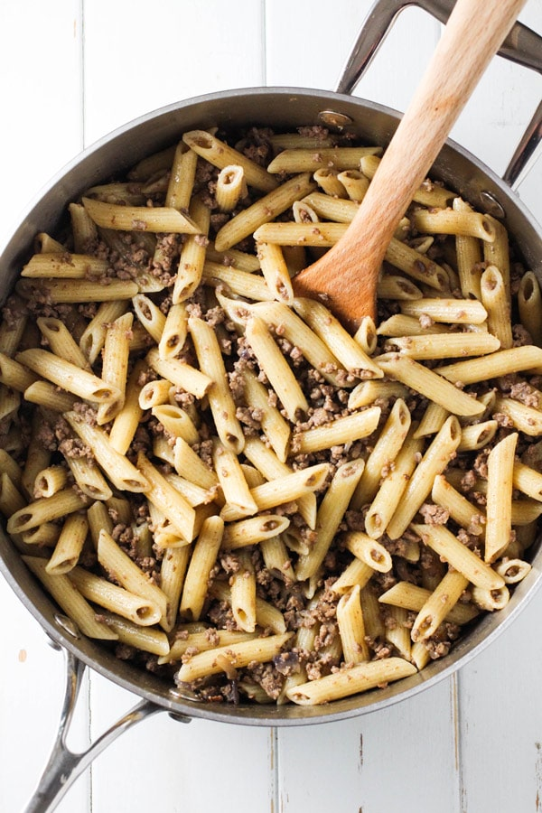

Makarony po Flotsky

image source: curiouscuisiniere.com
Description
This recipe is quick and easy to make. It requires few ingredients on hand to make a
delicious and nutritious meal. It became a staple with the Soviet navy.
Ingredients
- minced meat
- pasta
- an onion
- baking oil
Steps
- Cut up the onion.
- Add onion chunks and seasoning to the ground beef.
- Bake the ground beef while you boil the pasta.
- Combine everything together.
Home